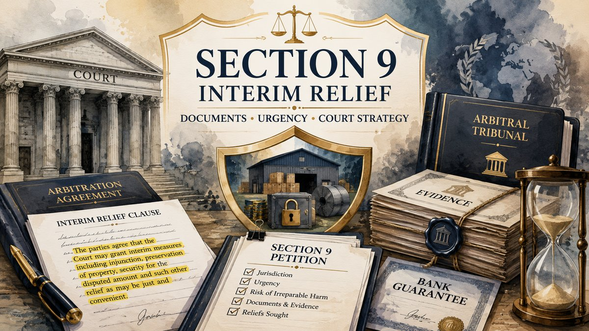

Last updated: July 2026.

Section 9 does not decide the final contractual claim. It enables a competent court to protect the arbitral process, disputed property, evidence, goods, money or another legally protectable interest where waiting for the final award may make the arbitration ineffective.
What is interim relief under Section 9?
Section 9 of the Arbitration and Conciliation Act, 1996 permits a party to an arbitration agreement to seek specified interim measures from a court. The application may be made before arbitral proceedings begin, during the arbitration, or after the award is made but before it is enforced under Section 36.
The relief is protective and temporary. A Section 9 petition should therefore identify the arbitration agreement, the dispute proposed to be arbitrated, the interest requiring protection, the immediate risk and the precise order needed to preserve an effective final remedy.
A petition should not merely restate the entire claim. The court needs a coherent connection between the arbitration agreement, the substantive dispute and the interim measure requested.
At what stage can a Section 9 application be filed?
The statute recognises three broad stages:
- Before arbitration commences: where protection cannot wait for tribunal constitution.
- During arbitral proceedings: subject to the statutory preference for Section 17 after the tribunal has been constituted.
- After the award: before the award is enforced under Section 36.
The procedural stage should be stated accurately. The existence of an arbitration clause, dispatch of an invocation notice, receipt of the notice, appointment communications and constitution of the tribunal are distinct events.
Section 9 before arbitration begins
A pre-arbitration petition may be appropriate where the applicant cannot reasonably wait for appointment of the tribunal. Examples may include a threatened disposal of disputed goods, destruction of evidence, removal of project material, interference with secured contractual property or another immediate event capable of defeating the contemplated arbitration.
The applicant should produce the arbitration agreement and demonstrate a genuine intention to commence arbitration. Section 9 is not designed to obtain stand-alone relief while indefinitely avoiding the arbitral process.
The 90-day commencement requirement
Where the court grants interim protection before commencement of arbitration, Section 9(2) requires arbitral proceedings to commence within ninety days from the date of the order, unless the court determines a further period.
Under Section 21, unless the parties agreed otherwise, arbitral proceedings in respect of a particular dispute commence when the respondent receives the request for that dispute to be referred to arbitration. The invocation notice, service record and dispute description should therefore be prepared alongside the Section 9 strategy.
Do not treat filing a petition, sending a general demand or beginning informal appointment discussions as automatically satisfying Section 21. The exact clause, communication and receipt record must be checked.
Section 9 after constitution of the tribunal
Once the arbitral tribunal has been constituted, Section 9(3) directs the court not to entertain the application unless circumstances exist that may render the remedy under Section 17 inefficacious.
The petition should therefore disclose the tribunal's constitution and explain why tribunal relief is unavailable or ineffective in the particular circumstances. It is not enough to prefer a court forum without addressing Section 9(3).
Possible concerns may involve the tribunal's practical inability to act in the required timeframe, a relief directed at circumstances not effectively manageable through the available tribunal process, or another documented obstacle. Whether the statutory exception is satisfied depends on the facts and governing decisions.
Section 9 and Section 17: which forum should be approached?
Before tribunal constitution: Section 9 provides the court route for urgent protection.
After tribunal constitution: Section 17 is ordinarily the primary interim forum.
Where Section 17 may not be efficacious: the court may examine whether Section 9(3) permits continued court intervention.
After the award: Section 9 remains textually available until enforcement under Section 36, whereas the current text of Section 17 operates during arbitral proceedings.
Section 17 gives the tribunal substantially corresponding powers over preservation, security, inspection, injunction, receivership and other just and convenient interim protection. A Section 17 order is enforceable under the Code of Civil Procedure as though it were an order of the court, subject to the statutory appellate framework.
What interim measures may be requested?
Section 9(1) identifies several categories of protection:
- Preservation, interim custody or sale of goods that are the subject matter of the arbitration agreement.
- Securing the amount in dispute in the arbitration.
- Detention, preservation or inspection of disputed property or things.
- Entry upon land or buildings, taking samples, observations or experiments where necessary to obtain information or evidence.
- Interim injunction.
- Appointment of a receiver.
- Another interim measure that appears just and convenient to the court.
The prayer should identify the statutory category and the operational terms of the requested order. A vague request for all appropriate protection may be insufficient where the applicant has not specified the property, amount, conduct or evidence at risk.
Court, seat and jurisdiction review
The competent forum must be examined under the statutory definition of “Court” in Section 2(1)(e), the nature of the arbitration, the arbitral seat, the subject matter and the jurisdictional record.
For domestic arbitration, the definition generally refers to the principal civil court of original jurisdiction in a district and includes a High Court exercising ordinary original civil jurisdiction where applicable. International commercial arbitration is treated separately under the statutory definition.
The contract may refer to seat, venue, exclusive jurisdiction and place of performance in different clauses. These expressions should be read together rather than selecting a court only because an office, hearing venue or part of the transaction is located there.
Section 42 also requires review of previous applications under Part I. A prior application made before a competent court may affect where subsequent applications arising from the same arbitration agreement and proceedings must be filed.
Documents required for a Section 9 petition
The file should normally be organised into contract, dispute, urgency, asset and procedural groups:
- Signed contract and the complete arbitration clause.
- Addenda, purchase orders, work orders, general conditions and later contractual modifications.
- Notice of breach, termination, demand, invocation and proof of service.
- Claim calculation, invoices, account statements, payment records and admissions.
- Documents identifying the goods, property, project material, security, bank guarantee or evidence requiring protection.
- Photographs, inventory, inspection reports, correspondence or digital records showing the present condition and immediate risk.
- Corporate authorisation, party details and address records.
- Earlier court applications, tribunal orders and appointment communications.
- A date chart showing when the risk emerged and what action was taken.
- A draft of the precise interim directions requested.
Every central factual assertion should be matched with a document or a clear explanation of why the evidence is not presently available.
How should urgency and risk be shown?
Urgency should be demonstrated through events, dates and records rather than adjectives. The petition should explain what is likely to happen, when it may happen, who controls the relevant asset or evidence and why the eventual award may become ineffective without immediate protection.
Depending on the relief, the applicant should address the apparent strength of the protected right, comparative prejudice, adequacy of damages, preservation of the status quo and whether the requested measure is proportionate to the interim risk.
Delay may weaken the assertion of urgency. Where time has passed, explain the intervening negotiations, discovery of the risk, recent triggering event or other reason the application became necessary at the present stage.
Securing the amount in dispute
Section 9 expressly permits an application to secure the amount in dispute, but this does not mean that every monetary claim automatically results in an order to deposit or secure the entire claimed sum.
A money-security request should identify the claim calculation, contractual basis, admissions if any, conduct suggesting a real enforcement risk, known asset position and why a less restrictive measure would not adequately protect the arbitration.
The applicant should avoid using interim proceedings as a substitute for final adjudication. The respondent, in turn, should answer the evidence of risk and not rely only on a general denial of the underlying debt.
Preservation of goods, property and evidence
Where goods or property are liable to deteriorate, disappear, be altered or lose evidentiary value, the petition should include an inventory, location, ownership or custody record, photographs, condition reports and a workable proposal for inspection, storage, custody or sale.
If entry, sampling, observation or inspection is requested, the order sought should identify the premises, material, authorised person, timing, method, confidentiality safeguards and reporting process.
For digital records, identify the systems, accounts, devices, data sets or access logs at risk and propose a proportionate preservation mechanism rather than a sweeping request unrelated to the dispute.
Injunction, receiver and contractual security issues
An interim injunction should be linked to a defined contractual or proprietary right and a specific threatened act. Broad restraints that effectively grant final relief require careful justification.
Appointment of a receiver is a significant protective measure. The petition should explain the property, control problem, management risk and why a less intrusive direction would not protect the subject matter.
Applications involving bank guarantees, performance security, project possession or continuing contractual performance require close review of the instrument, underlying contract and established legal standards. A generic allegation of breach should not be treated as sufficient for every restraint request.
How should a respondent oppose a Section 9 application?
The respondent should first separate jurisdictional, maintainability, factual and relief-specific objections. Relevant questions may include:
- Whether the applicant is a party to the arbitration agreement.
- Whether the identified dispute falls within the clause.
- Whether the court approached is competent.
- Whether the tribunal has already been constituted and Section 17 is efficacious.
- Whether the urgency is real, recent and supported by evidence.
- Whether the requested order is disproportionate or effectively final.
- Whether the property, goods, amount or evidence is actually connected to the arbitration.
- Whether a narrower undertaking, disclosure, inventory or preservation arrangement would address the risk.
The response should produce counter-documents, not merely deny the application. Account records, asset documents, project status, existing safeguards, solvency material and correspondence may be relevant depending on the relief.
Appeal from a Section 9 order
Section 37 provides an appeal from an order granting or refusing a measure under Section 9. It also provides an appeal from a tribunal order granting or refusing an interim measure under Section 17.
The appeal route, limitation, forum and immediate compliance position should be checked from the order and applicable procedural law. Section 37 does not create an unrestricted second appeal.
Common mistakes in Section 9 proceedings
- Filing without the complete arbitration agreement.
- Choosing the forum without analysing the seat, statutory court definition and previous Part I applications.
- Seeking final contractual relief in the form of an interim prayer.
- Claiming urgency without a date chart or supporting record.
- Asking for full monetary security without evidence of a protective need.
- Ignoring the tribunal's constitution and Section 9(3).
- Obtaining pre-arbitration protection without planning Section 21 commencement within the statutory period.
- Using vague descriptions of assets, goods, evidence or restrained conduct.
- Omitting material communications, earlier proceedings or existing safeguards.
- Failing to propose a practical mechanism for custody, inspection, preservation or compliance.
Practical Section 9 preparation checklist
- Extract the exact arbitration clause and connected jurisdiction provisions.
- Confirm whether the tribunal has been constituted.
- Identify the competent court and any earlier Part I application.
- Define the dispute intended for arbitration.
- Identify the statutory category of interim protection.
- Prepare a chronology of breach, risk, notice and urgency.
- Collect documents proving the threatened prejudice.
- Draft a narrow, workable and enforceable prayer.
- Prepare the Section 21 invocation and service plan where arbitration has not commenced.
- Address Section 17 efficacy where the tribunal already exists.
- Review appeal and compliance consequences before the hearing.
Related arbitration guides
References / Sources
- Arbitration and Conciliation Act, 1996 — India Code compilation updated as on 1 June 2026.
- Sections 2(1)(e), 9, 17, 21, 36, 37, 42 and 43 of the Arbitration and Conciliation Act, 1996.
- Applicable court rules, commercial court procedure, arbitration clause wording and current judicial authorities should be checked for the specific forum, seat, relief and facts.
Prepare the contract, arbitration clause, risk chronology, notice record, asset or evidence documents, tribunal status and exact interim directions required before sending a structured enquiry. Do not send confidential material until consultation or formal engagement is confirmed.
Start Case Enquiry